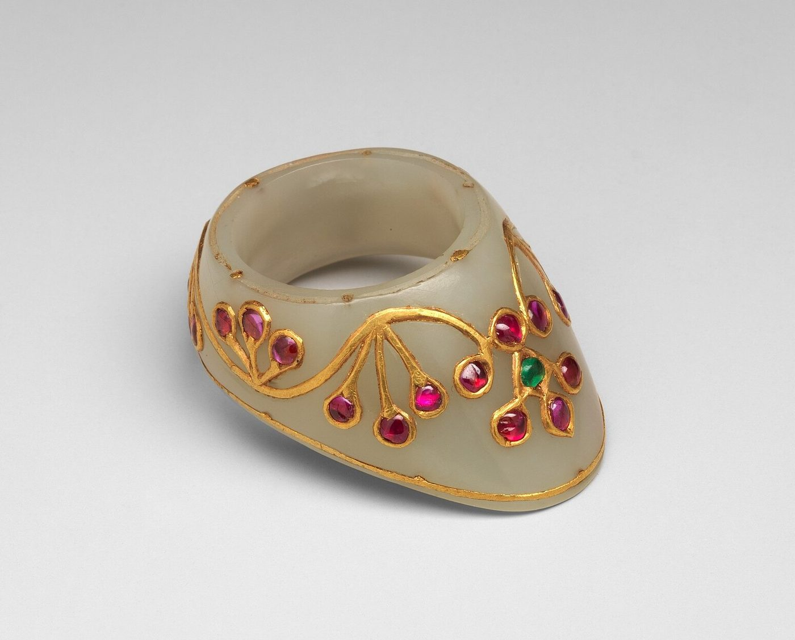

Chapter 4: Dhanurveda: The Bow, the Archer and the Divine Weapons¶
4.1 Introduction¶
The bow gave its name to the Sanskrit science of arms. In the epics the greatest warriors — Arjuna, Karṇa, Bhīṣma, Droṇa, Rāma — are archers first, and the bow is the weapon that defines the hero. Kings of the Gupta dynasty had themselves shown on their coins holding a bow; Rajput and Mughal princes were painted hunting with bow and arrow; and in many forest and hill communities the bow remained the everyday weapon of hunting and war into the twentieth century. This chapter considers what is known about Indian bows and arrows, what the texts of dhanurveda say about the archer’s training, how archery appears in the epics, and how the “divine weapons” of the epics should be understood.
4.2 Bows¶
4.2.1 The evidence¶
The Ṛgveda mentions the bow (dhanus), its string (jyā), the quiver and arrows with points of horn or metal. One hymn (RV 6.75), addressed to the weapons of the warrior, praises the bow and its string; with the bow, the poet prays, “may we win cows” (RV 6.75.2) (Jamison and Brereton 2014; Singh 1965). The Vedic chariot-fighter was primarily an archer.
The Greek writers who accompanied Alexander described the Indian infantry bow as equal in length to the man who carried it. Arrian reports that the archer rested the lower end on the ground and braced it with his left foot to draw it, and that its long arrows could pierce shield and breastplate (Chakravarti 1941). This was evidently a long self-bow, probably of bamboo, which grows abundantly in India and makes an effective bow. Such bows remained common among infantry and forest peoples throughout Indian history.
The composite bow — a short, recurved bow built of a wooden core with horn on the belly and sinew on the back, glued and bound — stores more energy for its length and is well suited to use from horseback or chariot. Composite bows were known in the ancient Near East and the steppe, and the Vedic warrior’s bow may have been of this kind, though the hymns do not describe its construction. What is certain is that the composite bow came to dominate Indian cavalry warfare with the arrival of Śaka, Kuṣāṇa and Hūṇa horse-archers and, later, of the Turkic cavalry of the Delhi Sultanate. Surviving Indian composite bows, most of them from the seventeenth to nineteenth centuries, are short, sharply recurved, and often lacquered and painted; examples of the Mughal and Rajput courts are preserved in many museum collections (Elgood 2004; Egerton 1880). Bows of steel are also found, but they appear to have been rare and in some cases ceremonial.
4.2.2 Names of bows¶
Sanskrit has many words for the bow — dhanus, cāpa, kārmuka, kodaṇḍa, śarāsana, iṣvāsa — and the epics give personal names to the bows of gods and heroes: Śiva’s Pināka, Viṣṇu’s Śārṅga, Arjuna’s Gāṇḍīva. Popular books sometimes treat these names as a classification of bow types, describing the kodaṇḍa as a recurve bow or the kārmuka as a composite war-bow. The texts do not support these identifications. The Arthaśāstra does attach four of the words to materials — kārmuka to bows of palm, kodaṇḍa to bows of bamboo, drūṇa to bows of wood and dhanus to bows of horn (AŚ 2.18) (Kangle 1960–1965) — but in most literature the words are used as synonyms, and the named bows are attributes of particular deities and heroes, endowed in the stories with miraculous powers.
4.3 The Composite Bow of the Later Period¶
The composite bow that dominated Indian cavalry warfare from the medieval period onwards was a sophisticated object. Its core was a thin strip of wood, often in several pieces joined together; to the belly (the side facing the archer) were glued strips of horn, usually from the water buffalo, which resist compression; to the back (the side facing the target) were glued layers of sinew, which resist tension. The whole was bound, covered with birch bark, leather or lacquer, and often painted. The tips (“ears”) were stiff and angled forward, acting as levers when the bow was drawn. Such bows were short — often little more than a metre long — and powerful, and they could be shot from horseback in any direction. They required great skill to make, months or years to season, and careful protection from damp, which could weaken the glue; Indian armies in the rainy season had to keep their bows in cases.
In its later Indian forms the composite bow was closely related to the bows of Persia, Central Asia and the Ottoman empire, and the surviving courtly examples carry the painted and gilded floral decoration of that wider world (Elgood 2004). Bamboo self-bows and simpler bows continued to be used by infantry and by forest and hill peoples.
4.4 The Draw and the Thumb Ring¶
There are two main ways of drawing a bow. In the “Mediterranean” draw, the string is pulled with the first three fingers; in the “Mongolian” or thumb draw, the string is held by the bent thumb, locked by the forefinger, and the thumb is protected by a ring. The thumb draw was used by the horse-archers of the steppes and was adopted by the Turks, Persians and Mughals. Indian museums contain many thumb rings (Persian zihgīr, shast) of jade, agate, ivory, metal and other materials, some of them of great beauty (Figure 4.1); Mughal emperors and princes are often painted wearing them (Elgood 2004). Indian sculpture of earlier periods shows archers using finger draws, though the conventions of sculpture make it difficult to identify techniques precisely, and the Agni Purāṇa also describes a finger draw (Section 4.7.2). The more elaborate descriptions of a “classical” Indian draw and its anchor points found in some popular accounts are not in the early texts.


4.5 Arrows¶
Indian arrows were usually made of reed or bamboo, fletched with feathers and tipped with heads of bone, horn or, from the first millennium BCE, iron. The epics and later texts name many kinds of arrows by the shape of their heads: the nārāca, often described as made wholly of iron; the ardhacandra, with a crescent-shaped head; the kṣurapra, “razor-edged”; the bhalla, with a broad blade; and the vatsadanta, “calf’s tooth” (Hopkins 1889). The names suggest specialised heads for piercing armour, cutting and wounding, though the epic battle descriptions use them more for poetic variety than for technical precision.
Poisoned and barbed arrows were known. Vedic hymns mention arrows smeared with poison, and the Mānava Dharmaśāstra forbids their use in fair combat (MDh 7.90; see Chapter 12) (Olivelle 2005) — a prohibition which implies that they were sometimes used. Fire-arrows, carrying burning material, appear in descriptions of sieges.
4.6 Fire Arrows and Incendiaries¶
Fire was a weapon in Indian warfare from early times. The Arthaśāstra describes incendiary mixtures and “fire-arrows” for setting enemy camps, forts and stores alight, and the use of birds, monkeys and other animals carrying burning material into enemy forts (AŚ 13.4) — a stratagem found in many ancient literatures, whose practicality is doubtful (Kangle 1960–1965). Fire-arrows and pots of burning oil were standard weapons of siege warfare throughout the medieval period. These incendiary weapons are sometimes cited as evidence that ancient India knew gunpowder; but they contain no explosive, and the evidence for gunpowder in India begins much later (Chapter 5).
4.7 What the Dhanurveda Texts Teach¶
For a book that takes dhanurveda as half its title, the obvious question is what the texts of that name actually say. The answer depends on which texts are meant, and on dates that Chapter 3 has set out: the Arthaśāstra’s chapter on the armoury is the earliest systematic material, the four dhanurveda chapters of the Agni Purāṇa are the oldest connected account of training, and the works that call themselves dhanurveda are later still. This section summarises them in that order. The Agni Purāṇa is paraphrased here from the Sanskrit text of Rājendralāla Mitra’s edition, chapters 248–251, as given in the electronic text on the GRETIL site, which follows that edition; Gangadharan’s is the standard English translation (Mitra 1870–1879; Gangadharan 1984–1987). Its verses are cited as AP chapter and verse. The printed text is corrupt in places, and where its sense is uncertain this is said.
4.7.1 The Arthaśāstra¶
The Arthaśāstra has no chapter on how to shoot. Its chapter on the armoury, besides naming bows by material (Section 4.2), lists kinds of bowstring and arrow, and requires the superintendent of the armoury to keep weapons in good repair and in sufficient numbers (AŚ 2.18) (Kangle 1960–1965; Olivelle 2013). In its discussion of battle it assigns archers to positions behind the front ranks or on raised ground, from which they could shoot over the heads of other troops. Its interest is in supply and deployment, not in the skill of the individual archer.
4.7.2 The Agni Purāṇa’s four chapters¶
The Agni Purāṇa, a compilation whose present form dates from roughly the eighth to the eleventh century (Rocher 1986), presents its dhanurveda as the god Agni’s instruction to the sage Vasiṣṭha. The four chapters move from classification to stance, from stance to the draw, from the stationary target to the mounted archer, and finally to the noose, the sword and the other weapons.
The first chapter begins by classifying. The science has four parts, matching the four kinds of fighter, on chariot, elephant, horse and foot, and fighting is of five kinds: with weapons released by a machine, such as the bow or the sling; released by the hand, such as stones and javelins; released and then recovered, such as the lance (prāsa); not released at all, such as the sword; and without weapons, that is, wrestling (AP 248.1–5). Fighting with the bow is ranked best, with the lance middling, with the sword lowest, and with the bare arms last (AP 248.6–7). This is not the fourfold scheme of “released”, “held”, “released and held” and “released by spell” (mantramukta) often attributed to the Agni Purāṇa in modern books; spell-weapons have no category of their own in these chapters. The text then says who may teach and fight: the teacher of dhanurveda is a brahmin, the pupils are of two of the classes, a śūdra may fight in an emergency, and the king may take the help of people of mixed classes (saṅkara) living in his country (AP 248.7–8; the wording of the last verse is uncertain in the printed text). The norm of a twice-born art, practised in fact by others, is already present (Chapter 13).
4.7.3 The archer’s stances¶
Ten stances (sthāna) follow, each defined by the placing of the feet and knees and, for most, by the distance between the feet in spans (vitasti), cubits (hasta) or finger-breadths (aṅgula) (Table 4.1). The archer is to make his first salutation in the last of them, then take the bow in the left hand and the arrow in the right, and shoot from vaiśākha, jāta or a long stance (AP 248.19–20).
| Stance | Description in the text | Verse |
|---|---|---|
| samapada | Feet together, toes, ankles and heels touching | 248.9 |
| vaiśākha | Knees held rigid, the feet three spans apart | 248.10 |
| maṇḍala | Knees seen in line “like a row of swans”, the feet four spans apart | 248.11 |
| ālīḍha | “Plough-shaped”: right knee and thigh rigid, five spans wide | 248.12 |
| pratyālīḍha | The reverse of ālīḍha: the left leg turned aside, the right straight | 248.13 |
| jāta | Ankles five finger-breadths apart, the stance twelve finger-breadths long | 248.14 |
| daṇḍāyata | One leg stretched out “like a staff” with the knee, the other bent and still | 248.15–16 |
| vikaṭa | A wide stance, the feet two cubits (hasta) apart | 248.16 |
| sampuṭa | Knees doubled, both feet turned upward | 248.17 |
| svastika | Feet slightly turned and set firm, sixteen finger-breadths apart; the stance of the first salutation | 248.18–19 |
Several of these names, ālīḍha and pratyālīḍha above all, also belong to the vocabulary of sculpture and dance, where they describe the lunging postures of fierce deities and of the archer-gods in temple reliefs. Posture was a shared language of several arts, and the archer’s stances were named in it.
4.7.4 Drawing, aiming and loosing¶
The account of the shot is the most technical part of the text (AP 248.20–35). The archer rests the lower end of the bow on the ground and balances it; he sets the bow at the level of the navel and the arrow at the hip, raises the hand to between eye and ear, and grips the bow with the leading fist. The leading arm is to be neither turned in nor out, neither high nor low, neither bent nor stiffly raised, but “even and steady, like a staff”; the fist covers the target. The chest is lifted, the shoulders lowered, the neck still, and the distance between chin and shoulder is measured in finger-breadths. The arrow is taken at its feathered end between forefinger and thumb and drawn with the middle and ring fingers as well, quickly, until it is fully drawn; after the loose the drawing hand is thrown back. This is a finger draw, not the thumb draw of the steppe archers and the Mughal courts (Section 4.4). The text ends the chapter with measures: the longest arrow is twelve fists (muṣṭi) long, the middle eleven, the shortest ten; the best bow is four cubits long, the middle three and a half, the least three, the same measures serving for the foot-soldier and for the archer on horse, chariot or elephant (AP 248.36–38). An earlier chapter, on the marks of royal insignia and weapons, adds the materials: bows of metal, of horn and of wood, the horn of the buffalo and of deer among others, and woods such as sandal, cane, sāl and arjuna; bowstrings of bamboo, hemp or bark; and four cubits again as the best length for a wooden bow (AP 244.4–10). The horn bows may have been composite bows, but the text does not say how any bow was built.
4.7.5 From the target to the battlefield¶
The second chapter turns from the shot to practice (AP 249). The archer, armoured and composed, ties his quiver-belt on the right, draws an arrow from the quiver with the right hand and takes up the bow with the left, nocks the arrow, draws, and looses at a disc-shaped target (candraka) sixteen finger-breadths across. Practice begins at a square target and moves on to targets that are low, high, moving and turning; the targets are grouped as “firm”, “difficult” and “varied and difficult”, two of each, and they are to be shot with the right hand and with the left. Only when he has mastered the targets on foot may the archer mount, and then practise against targets that whirl, move or stand, striking, piercing and cutting them (AP 249.10–18). The chapter closes with a verse on the archer as a pupil in discipline (yoga) who masters mind, eye and sight (AP 249.19).
4.7.6 The noose, the sword and the other weapons¶
The third chapter opens with the same rule — mastery of hand, mind and eye before mounting — and then describes the noose (pāśa): ten cubits long, made of cotton, muñja grass, hemp, sinew, arka fibre, hide or other strong material, carefully twisted, kept at the belt, whirled above the head in a ring and thrown at a man-shaped target covered in leather, and at targets that leap, jump and run (AP 250.1–6). The sword is worn at the waist on the left side, held firm with the left hand and drawn with the right, and practice is against a post six finger-breadths in girth and seven cubits high fitted with iron rods and pieces of armour (AP 250.7–10). The fourth chapter is a catalogue. It names thirty-two movements of sword and shield, eleven of the noose, and the actions proper to the discus, spear, javelin, mace, axe, hammer, bhindipāla, club, vajra, paṭṭiśa, sword and sling, and it gives a long list of holds and blows for mace-fighting and wrestling, among them pulls, neck-twists and a “back-breaking” throw (AP 251.1–30). It ends with the crews of war: two men with goads on an elephant, one on its neck, with two archers and two swordsmen; three horsemen to guard a chariot or an elephant, three archers to guard a horseman, and shield-bearers to guard the archers; and the worship of each weapon with its own mantra before battle (AP 251.31–34).
4.7.7 The later compilations¶
Later works that deal with archery — the archery verses of the Śārṅgadhara-paddhati (1363), the Kodaṇḍamaṇḍana attributed to the fifteenth-century architect Maṇḍana, and the Dhanurveda attributed to Vasiṣṭha — elaborate the same material, often with overlapping verses. Their printed editions rest on few manuscripts, and their contents are not paraphrased here verse by verse. None of them can be shown to preserve a lost Vedic or Mauryan treatise. Popular books sometimes present lists of “twelve archery postures” or detailed instructions on wind correction and arrow selection as classical teaching; such lists are not found in the texts named and should be treated with suspicion.
4.7.8 What the texts do and do not tell us¶
Read in this way, the dhanurveda of the Agni Purāṇa is neither a fragment of a lost Vedic science nor an empty formula. It is a compact syllabus: classification, stance, draw, measured equipment, a graded sequence of targets, the passage from foot to horse, and a list of the other weapons a fighting man should know. It shares with the epics the ranking of the bow above all other weapons, and with the dharmaśāstras the assumption that teaching belongs to brahmins. What it does not give is equally clear: no draw weights, no measured ranges, nothing on how a bow is made, and nothing on the composite bow and thumb draw that dominated the cavalry warfare of its own time (Section 4.14). It describes, in other words, the archery of the foot-soldier and the courtly pupil as a learned compiler of the late first millennium understood it, and it should be read as evidence for that, not for the battlefields of the Vedic or Mauryan periods.
4.8 Archery in the Epics¶
4.8.1 Droṇa’s school¶
The Mahābhārata’s account of the education of the Pāṇḍava and Kaurava princes by Droṇa (Ādiparvan) contains the most famous archery stories in Indian literature (Buitenen 1973–1978). In one, Droṇa sets a wooden bird in a tree as a target and asks each pupil what he sees before allowing him to shoot. The others see the tree, the bird, their brothers and the teacher; Arjuna says that he sees only the bird’s head, and he alone is allowed to shoot. The story became a byword for concentration. In another, Arjuna practises in the dark after noticing that he can eat in the dark without missing his mouth. The epic describes Arjuna as ambidextrous (savyasācin), able to draw the bow with either hand.
The same section tells of Ekalavya, the Niṣāda archer refused by Droṇa and later made to give up his right thumb; the episode is discussed in Chapter 13 as evidence of how birth limited access to martial training.
4.8.2 Tests of skill¶
At the self-choice ceremony (svayaṃvara) of Draupadī, suitors must string a great bow and hit a target set beyond a mechanical device (yantra); in later retellings the target becomes the eye of a revolving fish seen in reflection in water. Arjuna, disguised as a brahmin, succeeds. In the Rāmāyaṇa, Rāma wins Sītā by stringing and breaking Śiva’s bow, which no other suitor can lift. Such contests are literary motifs, but they show how central skill with the bow was to the image of the ideal prince.
4.8.3 The Upaniṣadic image¶
The bow also became a religious metaphor. A well-known verse of the Muṇḍaka Upaniṣad compares meditation to archery:
Muṇḍaka Upaniṣad 2.2.4
praṇavo dhanuḥ śaro hy ātmā brahma tal lakṣyam ucyate
apramattena veddhavyaṃ śaravat tanmayo bhavet
The syllable oṃ is the bow, the self is the arrow, and brahman is said to be the target. It is to be struck by one who is not distracted; one should become one with it, like the arrow.
4.9 The Bow in Religion and Kingship¶
The bow was a symbol of divine and royal power. Śiva, as Tripurāntaka, “destroyer of the three cities”, is shown in sculpture drawing a bow made of Mount Meru, with Viṣṇu as the arrow; Rāma is the archer-king par excellence, and his bow became his emblem; Kāma, the god of love, shoots arrows of flowers from a bow of sugarcane strung with bees; the goddess Durgā carries a bow among her weapons. In Buddhist art, Māra, the tempter, is sometimes shown with Kāma’s flowered bow. Kings were praised as archers in inscriptions and poetry, and Gupta gold coins of the “archer type” show the king standing with a bow, a type copied by later dynasties.
The bow also left a curious trace in Indian mathematics. In Indian trigonometry, the chord of an arc was called jyā or jīvā, “bowstring”, because the arc and chord resemble a bow and its string. The word passed into Arabic as jība, was misread as jayb (“fold”, “pocket”), and was translated into Latin as sinus, from which comes the English “sine”. The archer’s bowstring thus passed, through Indian astronomy and Arabic, into the vocabulary of European mathematics.
4.10 Hunting¶
The bow was the hunter’s weapon as much as the warrior’s, and hunting was the commonest way in which kings and nobles practised archery. Sanskrit literature has many royal hunts; in Kālidāsa’s Abhijñānaśākuntala, King Duṣyanta first appears pursuing a deer with his bow. The Arthaśāstra and the dharmaśāstras list hunting among the vices of kings, but also recognise its value as exercise and as training in judging the movement of animals and men; the Arthaśāstra prescribes protected hunting parks for the king (Kangle 1960–1965). Medieval kings hunted with bow, spear and trained cheetahs, and Mughal emperors organised enormous ring-hunts (qamargha), in which thousands of soldiers drove game into a closing circle, as both sport and military exercise. Rajput, Mughal and Pahari painting shows princes hunting deer, boar, lions and tigers with the bow long after firearms had become common.
4.11 The Divine Weapons¶
4.11.1 What the texts say¶
The battle books of the epics are full of weapons that no smith could make. Heroes obtain from the gods weapons (astra) that are activated by a spell and that, when released, produce fire, floods, storms, darkness, snakes or showers of arrows. The brahmāstra, āgneyāstra (fire weapon), vāruṇāstra (water weapon), nāgāstra (serpent weapon), pāśupatāstra (Śiva’s weapon) and nārāyaṇāstra are among the most often named. Each has its counter-weapon, so that duels between heroes become exchanges of spells. Arjuna wins the pāśupata weapon from Śiva after fighting the god disguised as a mountain hunter (kirāta), an episode retold in Bhāravi’s poem Kirātārjunīya.
The epic surrounds these weapons with rules. They are to be used only against those who also wield them, and the most powerful only in extremity. At the end of the war Aśvatthāman releases the brahmaśiras, a weapon of the same order as the brahmāstra, against the unborn heir of the Pāṇḍavas, an act condemned as among the gravest crimes of the war; he is cursed to wander the earth in suffering. The moral point is clear: the greater the power, the greater the obligation to restrain it.
4.11.2 Myths about ancient weapons and aircraft¶
These passages have been read by some modern writers as descriptions of nuclear weapons, guided missiles or aircraft, evidence of a lost advanced civilisation. There is no basis for such readings. The divine weapons are described in the language of magic and myth, they are obtained by austerities and prayer, and they belong to the same narrative world as talking animals, flying mountains and gods who take part in battle. No archaeological evidence of any kind supports the existence of such technology in ancient India.
Two particular claims are often repeated. The first concerns J. Robert Oppenheimer, director of the laboratory that built the first atomic bomb, who said in a television interview broadcast in 1965 that when he saw the first test explosion in 1945 he recalled a line of the Bhagavadgītā (11.32), in which Kṛṣṇa, revealing his cosmic form, says that he is time, the destroyer of worlds. Oppenheimer had studied Sanskrit and admired the Gītā; his remark expresses awe at the moral weight of the bomb, and is not a claim that the Gītā describes nuclear weapons. The second claim concerns ancient aircraft (vimāna). The text most often cited, the Vaimānika Śāstra, is a twentieth-century work, said to have been dictated by Pandit Subbaraya Shastry in the early decades of the twentieth century; a study by engineers of the Indian Institute of Science, Bangalore, published in 1974, found that its descriptions of aircraft were technically unworkable (Mukunda et al. 1974). The flying chariot Puṣpaka of the Rāmāyaṇa is a mythical vehicle.
The divine weapons are better understood in literary and religious terms. They express the idea that victory comes from the favour of the gods and from the hero’s spiritual discipline as well as from skill; they dramatise the moral danger of overwhelming force; and they allowed epic poets to stage duels of cosmic scale.
4.12 Archery in Legend and Memory¶
Indian legend is full of feats of archery. Arjuna hits a revolving target seen only in reflection; Rāma pierces seven sāl trees with a single arrow in the Rāmāyaṇa, to prove his strength to the monkey-king Sugrīva; and later stories attribute to heroes the ability to hit a target by sound alone (śabdavedhī). The Pṛthvīrāj Rāso, in its later versions, tells that the captive and blinded Pṛthvīrāja killed Muḥammad of Ghur by shooting at the sound of his voice. This story is a legend: Muḥammad of Ghur was killed in 1206, fourteen years after Pṛthvīrāja’s death, in his camp in the Punjab by assassins, and the contemporary sources say nothing of Pṛthvīrāja’s captivity in Ghazni (Talbot 2016). But the legend shows the place of the archer-king in popular memory.
The story of Ekalavya has also been retold by the communities with which it is concerned. Among some Bhil communities of western India, it is said that archers traditionally draw the bow without using the thumb, a practice explained by reference to Ekalavya’s sacrifice; whatever the origin of the practice, the story shows how a Sanskrit epic episode could be reinterpreted from the point of view of those it excluded. In modern India, Ekalavya has become a symbol both of dedication to learning and of the injustice of exclusion by birth, and his name has been given to a national scheme of residential schools for tribal children (the Eklavya Model Residential Schools).
4.13 Archery Games and Contests¶
Archery contests were part of courtly and popular festivals. The Mahābhārata’s tournament of the princes and the svayaṃvara contests are literary examples. In later centuries, archery competitions were held at courts and fairs, and Mughal and Rajput painting shows princes shooting at targets and at birds. Among the hill peoples of Himachal Pradesh, the archery game ṭhoḍā, in which teams shoot blunt arrows at each other’s legs, is played at village festivals (Chapter 15). In Bhutan, across the Himalaya, archery is the national sport and a central part of festival life. These games preserve, in a peaceful form, the skills and the social meanings of the bow.
4.14 Horse-Archery¶
The great change in Indian archery came from the steppe. Mounted archers using composite bows, able to shoot while advancing or retreating, were the core of the Śaka, Kuṣāṇa and Hūṇa armies in the early centuries CE, and of the Ghaznavid and Ghurid armies that invaded north India from the late tenth century. The Turkic slave-soldiers (mamlūk) who founded the Delhi Sultanate in 1206 were trained horse-archers, and the sultans’ armies relied on large forces of mounted archers supplied with imported horses (Jackson 1999; Digby 1971).
Indian armies adapted. Rajput cavalry, though famous for close combat with lance and sword, used the bow; the armies of Vijayanagara recruited Muslim horse-archers; and the Mughal army of the sixteenth and seventeenth centuries combined mounted archers with matchlockmen and artillery (Gommans 2002). The bow did not give way quickly to firearms (Section 4.16).
4.15 The Bow among the Peoples of the Forests and Hills¶
Archery was never only a royal or kṣatriya art. Hunters and forest communities — the people the Sanskrit texts called Niṣāda, Śabara, Kirāta or Bhilla — were renowned archers, and kings recruited them as soldiers; the Arthaśāstra lists forest troops (aṭavī) among the sources of an army (Kangle 1960–1965). For many of the peoples whom Indian law and administration later classed as “tribes” (ādivāsī), the bow has been central to hunting, warfare and identity. Bhil archers, from the hills of western and central India, served the Rajput states and the Marathas and fought against the Mughals and the British; the emblem of the state of Mewar shows a Bhil archer beside a Rajput warrior, in acknowledgement of the alliance on which the kingdom’s defence depended. In eastern India the bow was the weapon of three great risings against colonial rule and the landlords and moneylenders who came with it. The Kol rising of 1831–32 in Chota Nagpur, in which Munda and Ho villagers attacked the outsiders who had taken their lands, was put down by Company troops. The Santal rising (hul) of 1855–56, led by the brothers Sidhu and Kanhu Murmu, was fought largely with bows, arrows and axes and suppressed with heavy loss of life. And the ulgulān (“great tumult”) of 1899–1900, led by Birsa Munda, whose followers attacked police posts and missions with bows and arrows, ended when the rising was crushed and Birsa died in prison at Ranchi in 1900 (Singh 1983). These movements, and the forest peoples’ relations with the states around them, are treated in Volume 23, Jana–Jāti. In the north-east, the bow was a principal weapon of many hill peoples until the twentieth century, and among the Khasi of Meghalaya traditional archery (teer) survives as a popular sport, now also the basis of a licensed lottery.
The archery of these communities has its own rituals, techniques and lore, transmitted orally and only partly recorded. It is part of India’s martial heritage as much as the courtly archery described in Sanskrit texts, and its study, through ethnography and oral history, remains an important task.
4.16 The Decline of the Bow¶
The bow declined slowly as a military weapon. In the sixteenth and seventeenth centuries, Mughal and Deccani armies still relied heavily on archers, especially mounted archers; the matchlock was slow to load, inaccurate and unreliable in wet weather, and a skilled archer could loose several arrows in the time a musketeer fired once and, at moderate ranges, shoot as accurately. Over the seventeenth and eighteenth centuries, as matchlocks improved and as infantry armed with them became more numerous, the bow lost ground. By the time of the Anglo-Maratha and Anglo-Sikh wars of the early nineteenth century, it had largely disappeared from the regular armies of Indian states, surviving among irregular troops, hunters and forest peoples. Its last major military use in India was in the risings of forest peoples against colonial rule described in Section 4.15.
4.17 Archery as Discipline and Sport¶
Popular writing often links Indian archery to yoga and meditation, citing the Muṇḍaka Upaniṣad or Droṇa’s bird test. The link is real at the level of metaphor: Indian thinkers used the archer’s concentration as an image of the mind’s focus, and Buddhist and Jain texts use similar images. But claims that the dhanurveda texts prescribe systematic yogic breathing techniques for archers, or that classical archery postures were the source of modern yoga postures, go beyond the evidence. Many of the standing postures of modern yoga, including the “warrior” poses, were named and standardised in the twentieth century (Singleton 2010).
In modern India, archery has been reborn as an Olympic sport, with recurve and compound bows of modern materials. Its practitioners include many athletes from tribal communities of Jharkhand, Odisha and the north-east — a modern echo of the ancient importance of the bow outside the courts. Table 4.2 gathers some of the Sanskrit and later terms of archery used in this chapter.
| Term | Meaning |
|---|---|
| dhanus, cāpa, kārmuka, kodaṇḍa | Bow (largely synonymous in usage) |
| jyā, guṇa, maurvī | Bowstring |
| iṣu, śara, bāṇa | Arrow |
| iṣudhi, tūṇa, tūṇīra | Quiver |
| nārāca | Arrow described as wholly of iron |
| ardhacandra | Arrow with a crescent-shaped head |
| kṣurapra | Arrow with a razor-edged head |
| bhalla | Arrow with a broad head |
| lakṣya | Target |
| sthāna | Stance |
| samapada, vaiśākha, maṇḍala | Stances: feet together; feet three spans apart; feet four spans apart, knees in line (Table 4.1) |
| ālīḍha, pratyālīḍha | Wide lunging stances, each the mirror of the other |
| savyasācin | Ambidextrous archer (an epithet of Arjuna) |
| śabdavedhin | One who can hit a target by sound (legendary) |
| kamān, tīr (Persian) | Bow; arrow |
| zihgīr, shast (Persian) | Thumb ring for the thumb draw |
| tarkash (Persian) | Quiver |
Further Reading¶
-
Singh (1965): weapons of the Vedic period, including the bow.
-
Hopkins (1889): an exhaustive collection of epic material on weapons and fighting.
-
Mitra (1870–1879) and Gangadharan (1984–1987): the Sanskrit text and an English translation of the Agni Purāṇa, including its dhanurveda chapters.
-
Elgood (2004): arms and armour of the later period, with many bows.
-
Gommans (2002): horse-archery and cavalry in Mughal warfare.